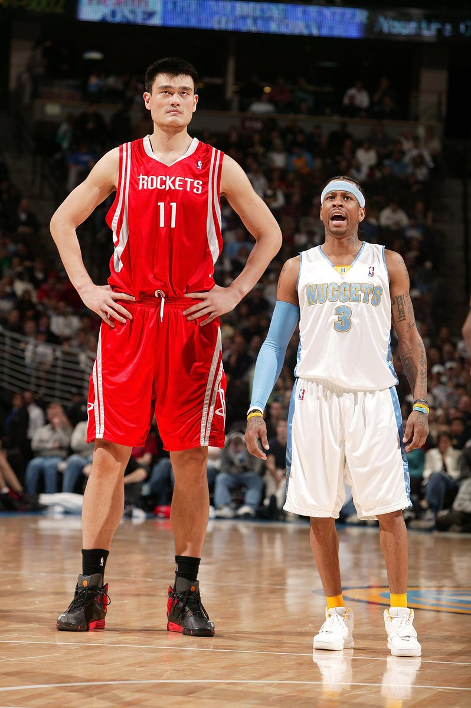
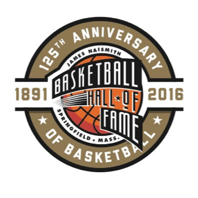
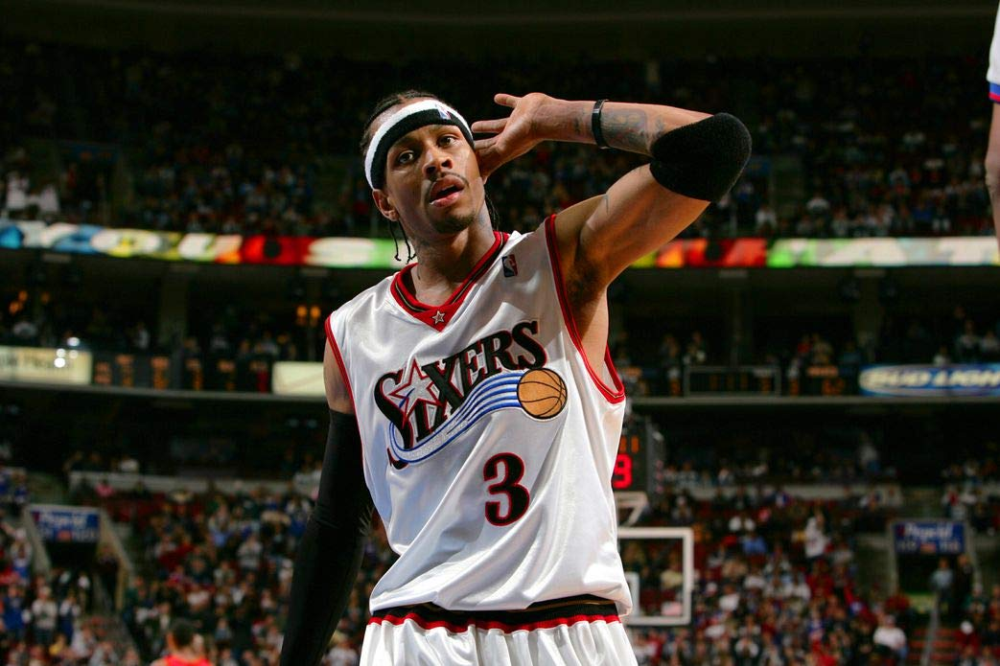
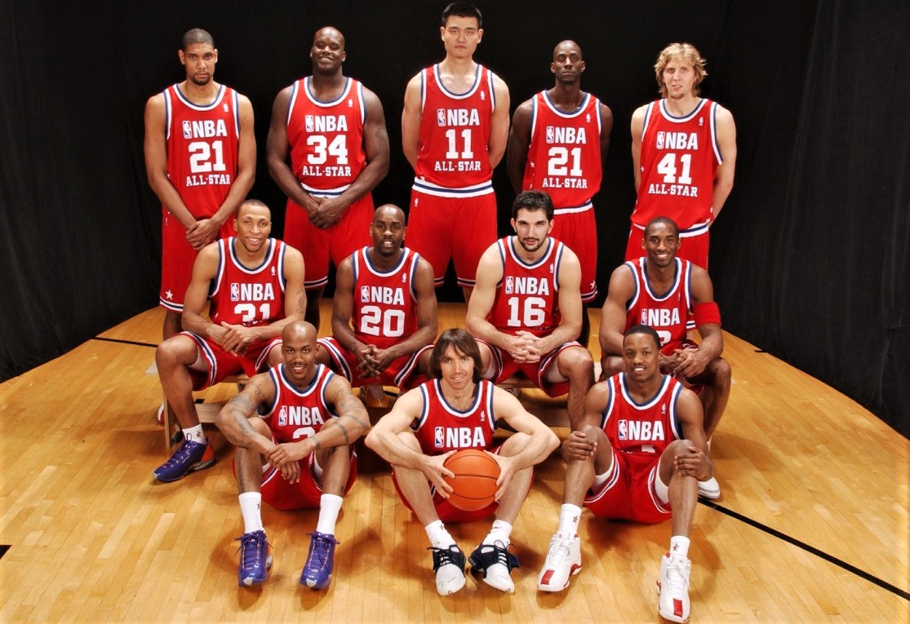

The 2016 class of the Naismith Memorial Basketball Hall of Fame stands as one of the most historic and unforgettable groups ever inducted into basketball’s greatest honor. Headlined by legendary players like Shaquille O'Neal, Allen Iverson, and Yao Ming, the class resembles a powerful combination of dominance, cultural impact, and global influence that molded the modern era of basketball. Shaquille O’Neal reimagined the center position with his immense physical presence, winning four NBA championships and becoming one of the most unstoppable amd brute forces the game has ever witnessed. His personality, charisma, and dominance made him not only a champion but also one of the most recognizable athletes in sports history. Allen Iverson, known for his fearless style, swagger, and unmatched scoring ability, changed the culture of basketball with his electrifying play, carrying teams through pure determination and skill while making an impact in the fashion world. Meanwhile, Yao Ming’s induction symbolized basketball’s growing international reach. As one of the most influential global ambassadors of the game, Yao helped bridge the NBA and China, inspiring millions of fans worldwide and proving that basketball truly belonged to a global stage. Together, these three legends represented different styles, backgrounds, and eras of greatness, yet all shared the ability to change the sport in their own unique ways.